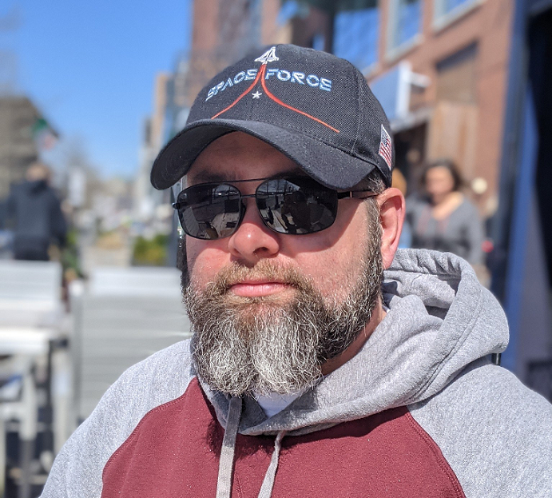

John G. West III
Computer Science Undergraduate Student
John West is a Software Developer with experience in multiple computer languages including, but not limited to, C++, Java, Python, and Ada. Mr. West has been interested in working on computing software since he received his first computer, a Macintosh Classic II as a gift from his father in the 90s. When September 11, 2001, happened, John followed his calling and enlisted in the US Army, where he served as an Infantryman for 10 years. After receiving an Honorable Discharge from the military, John resumed his education in the computing science field.